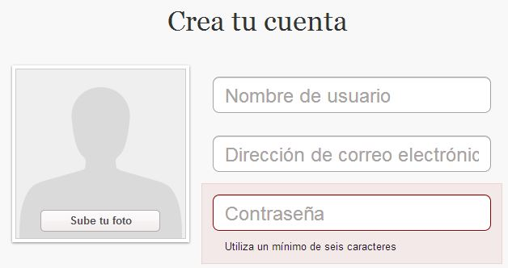

Un pequeño detalle de windows 8
Hace dos días instale windows 8 en mi PC. Poco a poco voy analizando las distintas opciones y mejoras. Al principio ha sido un cambio grande, el scroll horizontal, los tiles y el excesivo diseño flat han hecho que el primer día con windows 8 fuera complicado.
Hoy, un poco más asentado todo, he visto un detalle que me ha gustado mucho y creo que sería una gran idea para aplicar al diseño de nuestras webs y aplicaciones.
¿Contraseñas ocultas o mostradas?
El campo de contraseñas siempre ha sido un campo polémico. Tenemos su opción en el atributo type de la etiqueta input de HTML, pero, ¿es necesario ocultar la contraseña con asteriscos o círculos?.
En inicios de sesión ocultamos la contraseña para evitar que usuarios cercanos la vean. En registros nos encontramos que al ocultar las contraseñas se nos pide que la reescribamos para evitar errores, lo cual agrega un campo más al formulario rompiendo la regla de oro de estos: utiliza solamente los campos necesarios.
Una equivocación provoca más frustración que reescribir dos veces una contraseña, pero mostrar la contraseña eliminaría estos dos problemas. Entonces, ¿qué hacemos? ¿qué es mejor para el usuario?
A continuación os comento las distintas alternativas que podemos tomar tanto en registros como en inicios de sesión.
Pinterest (Registro)
Pinterest elimina el campo "Reescribe tu contraseña" manteniendo oculto el campo "Contraseña". Como usuarios, al ser la contraseña un campo importante es complicado equivocarnos. Además, la contraseña se puede recuperar, por lo que no es un elemento crítico que merezca una confirmación.

Registro de Pinterest
Facebook (Inicio de sesión)
La solución que ofrece Facebook al inicio de sesión (u ofrecía, porque he intentado hacer una captura a mi móvil y ya no aparece dicha opción) es que al equivocarte una vez en tus credenciales al iniciar sesión te aparece un cuadro para mostrar la contraseña, si lo marcas aparece y al desmarcarlo se oculta.
Es una opción interesante y muy fácil de implementar. Le das la opción al usuario y este decide si ver que ha escrito para comprobar su contraseña.
Windows 8 (Inicio de sesión)
A medida que escribes la contraseña para iniciar sesión aparece un icono (un ojo) a la derecha del campo. Mientras mantengas pulsado ese icono la contraseña será visible y al soltarlo se oculta.
Ofreces la misma opción que Facebook, pero de una manera más natural, pues atiende a la pulsación y no al marcado del cuadro. Como contra, este icono es un poco ambiguo y puede no entenderse, en cambio, con Facebook, el texto "Mostrar contraseña" es explícito por lo que no hay lugar a duda.